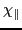
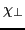
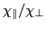
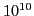
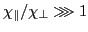
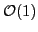

Transport in magnetized plasmas is of fundamental interest in controlled fusion and astrophysics research. Two issues make this problem particularly difficult to study: (i) The extreme anisotropy between the parallel (i.e., along the magnetic field),

, and the perpendicular,
, conductivities (
may exceed
in fusion plasmas); and (ii) magnetic field-line chaos, which in general precludes the construction of magnetic field line coordinates. In fact, to date, and despite significant work on the subject (see e.g. [1-6]), a suitable numerical approach that is at the same time high-order (to avoid numerical pollution of the perpendicular dynamics), robustly positivity-preserving (i.e., that enforces a maximum principle and thus a positive temperature at all times), and algorithmically scalable (i.e., amenable to modern iterative methods) does not exist. Approaches that enforce the maximum principle of the parallel transport operator in finite differences [5] and finite elements [6] have been proposed. However, they rely on limiters which result in formally first-order accurate discrete representations (thus introducing numerical pollution) and result in strongly nonlinear algebraic systems which tend to break modern nonlinear iterative methods. Moreover, the condition number of the Jacobian matrix associated with the anisotropic transport equation can be shown to scale as the anisotropy ratio
, thus effectively precluding the use of scalable iterative methods.Recently [7], a novel Lagrangian Green's function method has been proposed to solve the purely parallel transport equation, which is applicable to both integrable and chaotic magnetic fields. The approach excels in all counts, namely, it is very accurate (in fact, it respects transport barriers -flux surfaces- exactly by construction), inherently positivity-preserving, and scalable algorithmically (i.e., work per degree-of-freedom is grid-independent). However, it is of limited applicability to practical applications, as it does not account for more general physics such as perpendicular transport and sources.
In this talk, we will review the Lagrangian strategy for purely parallel transport, and describe its extension to include perpendicular transport and arbitrary sources. The formulation is asymptotic-preserving (AP) by construction, which ensures a consistent numerical discretization temporally and spatially for arbitrary ratios (from arbitrarily large to

values). This is of particular importance, as parallel and perpendicular transport terms may become comparable in particular regions of the plasma (e.g., at incipient islands), while remaining disparate elsewhere. Algorithmically, the approach uses a simple operator-split approach, consisting of an Eulerian update (employing multilevel-preconditioned Newton-Krylov methods), and a Lagrangian step. Both steps scale optimally in that the cost per degree-of-freedom is grid-independent. The AP character of the formulation ensures that the splitting error is small in all regimes, and in fact it becomes negligible in the asymptotic regime . We will present numerical evidence that demonstrates the advertised properties of the approach.
[1] C. Sovinec et al., J. Comput. Phys., 195 (2004) 355-386
[2] S. Günter, Q. Yu, J. Krüger, K. Lackner, J. Comput. Phys., 209 (2005) 354-370
[3] S. Günter, K. Lackner, C. Tichmann, J. Comp. Phys., 226 (2), 2306-2316 (2007)
[4] S. Günter, K. Lackner, J. Comp. Phys., 228 (2), 282-293 (2009)
[5] P. Sharma, G. W. Hammett, J. Comput. Phys., 227 (2007) 123-142
[6] D. Kuzmin, M.J. Shashkov, D. Svyatskiy, J. Comput. Phys., 228 (2009) 3448-3463
[7] D. del-Castillo-Negrete, L. Chacón, Phys. Rev. Lett., 195004 (2011)